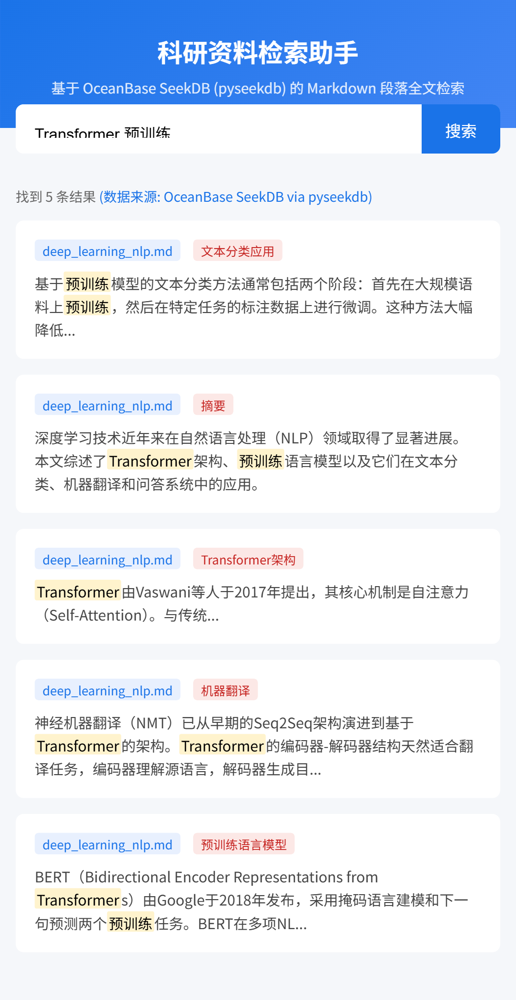

基于 OceanBase SeekDB 的 Markdown 段落全文检索工具，支持语义搜索、高亮显示和智能过滤
科研资料检索助手是一个面向研究者的智能检索工具，能够将 Markdown 格式的科研资料解析为段落， 并使用 OceanBase SeekDB (pyseekdb) 进行高效的全文检索。系统支持中文分词、 关键词高亮、智能过滤误匹配，并提供简洁的 Web 界面和 CLI 验证工具。
基于 SeekDB 的 ik 分词器，支持中英文混合搜索，快速定位相关段落
二次验证机制，自动过滤误匹配结果，确保搜索准确性
搜索结果自动高亮关键词，原文转义防止 XSS 攻击
显示来源文件、章节信息，方便追溯原文上下文
以下结果从干净数据库（空目录）开始，按 README 步骤实际运行得出：
| 查询词 | 命中数 | 说明 |
|---|---|---|
Transformer 预训练 |
5 条 | 命中 deep_learning_nlp.md 中的文本分类、摘要、架构、翻译、模型章节 |
量子计算 超导 |
0 条 | 无匹配（二次过滤去除了误匹配"Query"英文词的结果） |
分布式数据库 HTAP |
1 条 | 命中 oceanbase_whitepaper.md 概述章节 |
Paxos 一致性 |
2 条 | 命中分布式事务章节 |
启动 Web 服务后，访问 http://localhost:5000 即可使用搜索界面：

界面特性：搜索结果显示文件标签、章节标签、高亮摘要；零结果时显示友好提示； 错误时显示红色错误信息（与零结果区分）
项目代码托管在 Git 仓库，包含完整的实现、测试数据和文档：
访问代码仓库（待填写真实链接）仓库结构：
评审可在干净的 WSL 环境中按以下步骤复现所有结果：
wsl && sudo apt-get update && sudo apt-get install -y python3-pip python3-venv
cd /mnt/f/oceanbase_competition/powerContext/codes/powercontext-qoder/qoder
python3 -m venv venv && source venv/bin activate && pip install -r requirements.txt
python verify_seekdb.py
python app.py
export SEEKDB_DEPS=/path/to/pyseekdb/deps
详细步骤请参见 README.md
重新导入相同资料不会导致段落重复。索引前调用 db.clear() 清空集合，
确保段落数始终为 22（即使删除 .indexed 标志后重新运行）。
SeekDB 全文索引可能匹配到无关内容（如"量子计算 超导"匹配到包含"Query"英文词的段落）。 系统在返回结果后进行二次验证，检查原文是否真正包含查询词，过滤掉误匹配。
生成高亮摘要时，先对原文调用 html.escape() 转义特殊字符，
再应用 <mark> 标签，防止 XSS 攻击。
Web 界面明确区分"检索出错"（红色错误提示）和"零结果"（灰色友好提示）， 帮助快速定位问题。